今天要介绍的是基础容器类（为了与并发容器类区分开来而命名的名字）中的另一个成员——PriorityQueue，它的大名叫做优先级队列，想必即使没有用过也该有所耳闻吧，什么？没。。没听过？emmm。。。那就更该认真看看了。
通过本篇你将了解到：
1、PriorityQueue是什么？
2、PriorityQueue的内部结构是什么？
3、二叉堆、大顶堆、小顶堆分别是什么？有什么特性？
4、小顶堆是如何实现的，如何用数组表示？
5、小顶堆的删除、插入操作是如何进行的？
6、PriorityQueue的源码解析。
7、PriorityQueue的应用场景。
PriorityQueue简介
PriorityQueue也是Queue的一个继承者，相比于一般的列表，它的特点便如它的名字一样，出队的时候可以按照优先级进行出队，所以不像LinkedList那样只能按照插入的顺序出队，PriorityQueue是可以根据给定的优先级顺序进行出队的。这里说的给定优先级顺序既可以是内部比较器，也可以是外部比较器。PriorityQueue内部是根据小顶堆的结构进行存储的，所谓小顶堆的意思，便是最小的元素总是在最上面，每次出队总是将堆顶元素移除，这样便能让出队变得有序，至于什么是小顶堆，后面会有详细介绍。
比如说，比较常见的场景就是任务队列，队列动态插入，后面的任务优先级高的需要被先执行，那么使用优先级队列就可以比较好的实现这样的需求。下面我们模拟一下这个场景：
public class PriorityQueueTest {
public static void main(String[] args){
// 传入外部比较器，
//PriorityQueue<Task> taskQueue = new PriorityQueue<>(Comparator.comparingInt(Task::getPriority));
//PriorityQueue<Task> taskQueue = new PriorityQueue<>((t1, t2) -> t1.getPriority() - t2.getPriority());
PriorityQueue<Task> taskQueue = new PriorityQueue<>(new Comparator<Task>() {
@Override
public int compare(Task t1, Task t2) {
return t1.getPriority() - t2.getPriority();
}
});
// 添加六个任务
taskQueue.add(new Task(1, "learn java"));
taskQueue.add(new Task(3, "learn c++"));
taskQueue.add(new Task(4, "learn c#"));
taskQueue.add(new Task(2, "learn python"));
taskQueue.add(new Task(2, "learn php"));
taskQueue.add(new Task(5, "learn js"));
// 出队
while (!taskQueue.isEmpty()){
System.out.println(taskQueue.poll());
}
}
}
class Task{
/**
* 任务优先级
*/
private int priority;
/**
* 任务名称
*/
private String taskName;
public Task() {
}
public Task(int priority, String taskName) {
this.priority = priority;
this.taskName = taskName;
}
public int getPriority() {
return priority;
}
public void setPriority(int priority) {
this.priority = priority;
}
public String getTaskName() {
return taskName;
}
public void setTaskName(String taskName) {
this.taskName = taskName;
}
@Override
public String toString() {
return "Task{" +
"priority=" + priority +
", taskName='" + taskName + '\'' +
'}';
}
}输出如下：
Task{priority=1, taskName='learn java'}
Task{priority=2, taskName='learn python'}
Task{priority=2, taskName='learn php'}
Task{priority=3, taskName='learn c++'}
Task{priority=4, taskName='learn c#'}
Task{priority=5, taskName='learn js'}可以看到，输出的时候是按照我们设定的优先级顺序进行输出的，由于默认的是小顶堆，所以这里Priority值小的会被先输出。
PriorityQueue的内部结构
上面已经提到了，PriorityQueue的内部结构其实是按照小顶堆的结构进行存储的，那么什么是小顶堆呢？说到小顶堆，还是先从堆开始介绍吧。
堆和栈一样是一种很基础的数据结构，在维基百科中的介绍如下：
堆（英语：Heap）是计算机科学中一类特殊的数据结构的统称。堆通常是一个可以被看做一棵树的数组对象。在队列中，调度程序反复提取队列中第一个作业并运行，因为实际情况中某些时间较短的任务将等待很长时间才能结束，或者某些不短小，但具有重要性的作业，同样应当具有优先权。堆即为解决此类问题设计的一种数据结构。
用图来表示的话就像这样：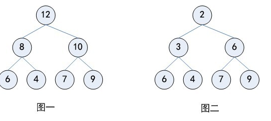
说完了堆，再来聊聊它的进化版——二叉堆，同样引用维基百科中的介绍：
二叉堆（英语：binary heap）是一种特殊的堆，二叉堆是完全二叉树或者是近似完全二叉树。二叉堆满足堆特性：父节点的键值总是保持固定的序关系于任何一个子节点的键值，且每个节点的左子树和右子树都是一个二叉堆。
当父节点的键值总是大于或等于任何一个子节点的键值时为最大堆。 当父节点的键值总是小于或等于任何一个子节点的键值时为最小堆。
其中，最大堆也叫做大顶堆或者大根堆，最小堆也叫做小顶堆或者小根堆。上面的图一其实就是一个大顶堆，而图二则是小顶堆。PriorityQueue是通过数组表示的小顶堆实现的，既然如此，PriorityQueue的排序特性自然与小顶堆的特性一致，下面便介绍小顶堆如何使用数组进行表示以及插入删除时的调整。
下面是一个由10，16，20，22，18，25，26，30，24，23构成的小顶堆：
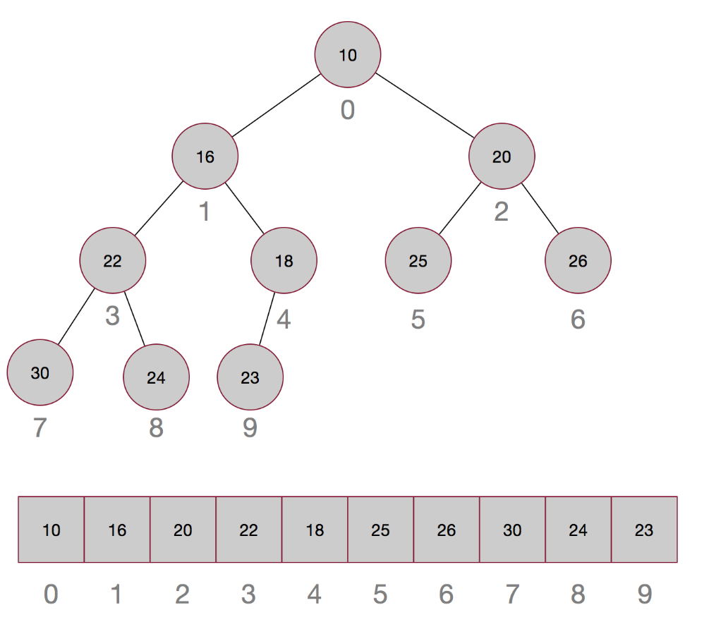
将其从第一个元素开始依次从上到下，从左到右给每个元素添加一个序号，从0开始，这样就得到了相应元素在数组中的位置，而且这个序号是很有规则的，第k个元素的左孩子的序号为2k+1，右孩子的序号为2k+2，这样就很容易根据序号直接算出对应孩子的位置，时间复杂度为o(1)。这也就是为什么可以用数组来存储堆结构的原因了。
再来看看小顶堆是如何插入元素的，假设我们插入一个元素15：
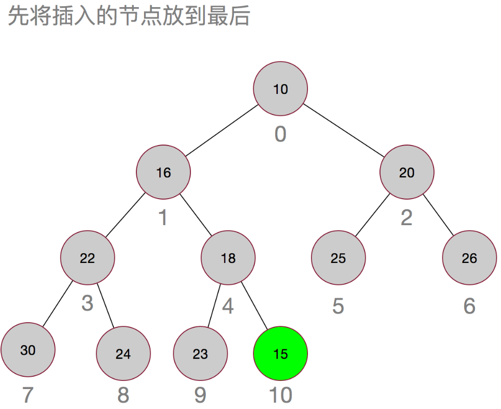
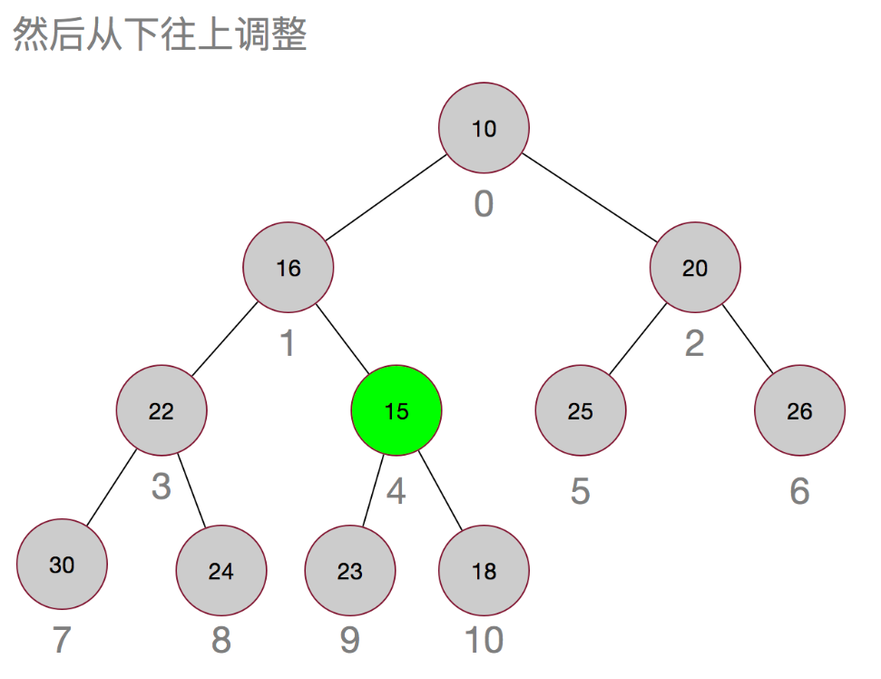
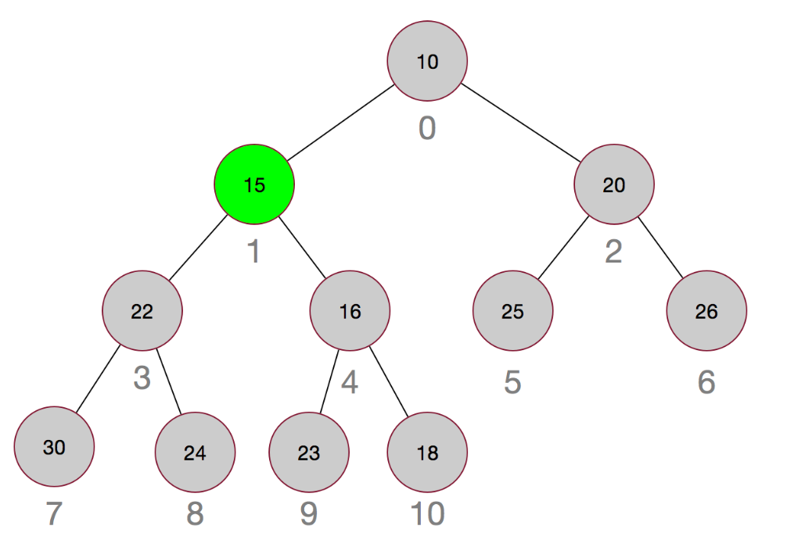
插入元素的调整其实很简单，就是先插入到最后，然后再依次与其父节点进行比较，如果小于其父节点，则互换，直到不需要调整或者父节点为null为止。
那再来看看移除元素：
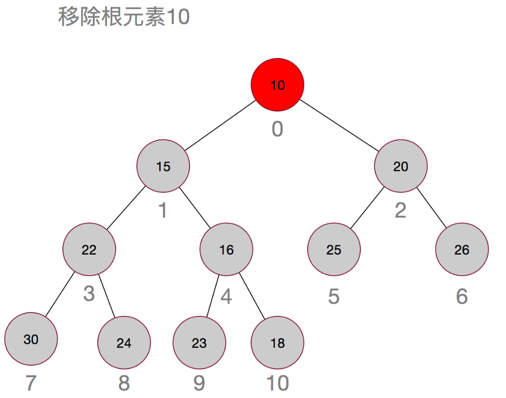
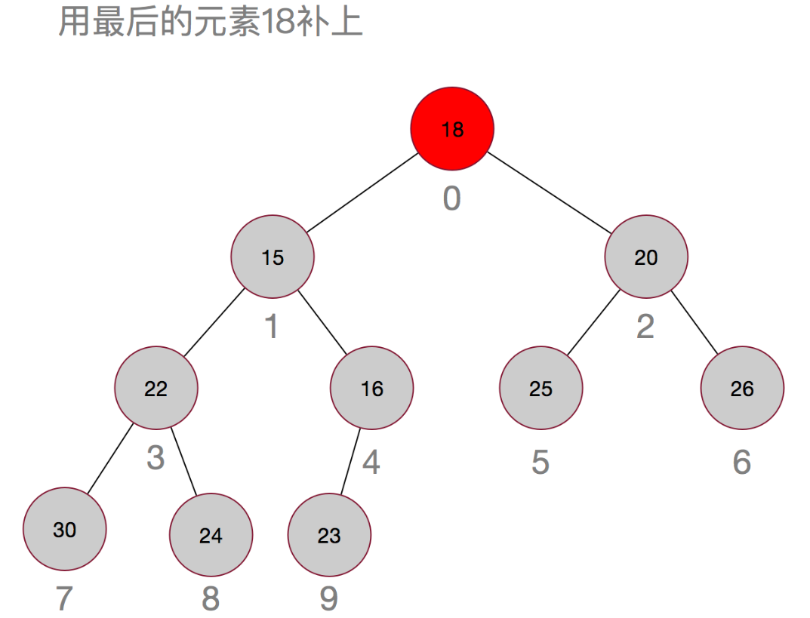
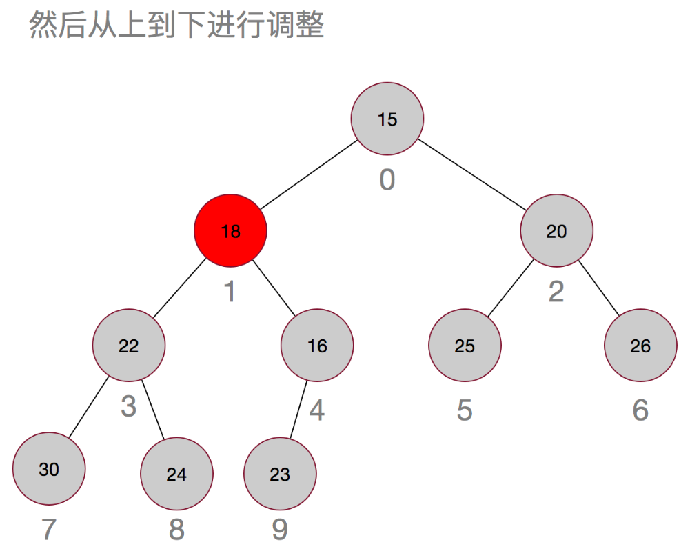
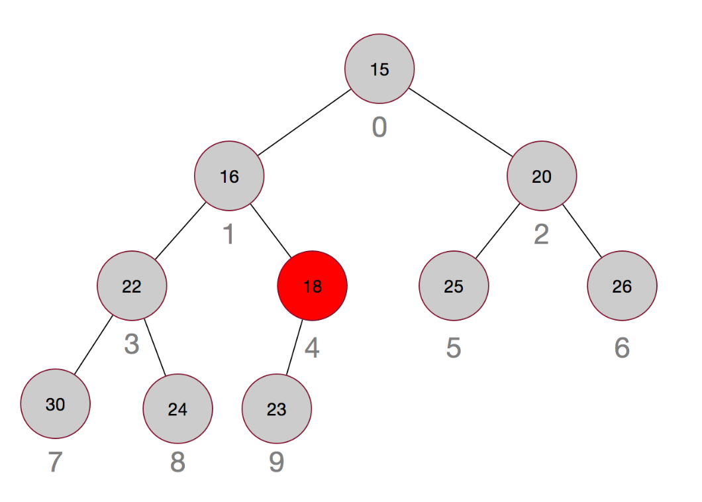
嗯，过程其实也很简单，先用最后的元素当替补，然后再从上往下进行调整。
PriorityQueue源码解析
小顶堆已经介绍完了，那PriorityQueue就没什么内容可讲了，嗯，那散了吧好了好了，不开玩笑了，接下来让我们一起来看看源码中是如何实现的。
先来继承结构：
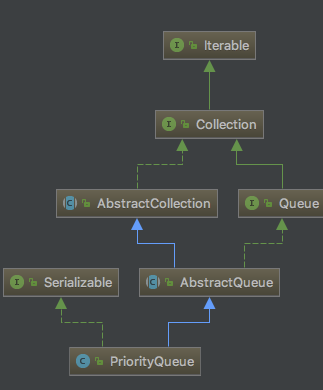
PriorityQueue继承自AbstractQueue，像这样的Abstract开头的抽象类，想必应该不陌生了，就是继承自指定接口然后进行了一些默认实现。
来看看PriorityQueue的内部成员：
// 默认初始化容量
private static final int DEFAULT_INITIAL_CAPACITY = 11;
/**
* 优先级队列是使用平衡二叉堆表示的: 节点queue[n]的两个孩子分别为
* queue[2*n+1] 和 queue[2*(n+1)]. 队列的优先级是由比较器或者
* 元素的自然排序决定的， 对于堆中的任意元素n，其后代d满足：n<=d
* 如果堆是非空的，则堆中最小值为queue[0]。
*/
transient Object[] queue;
/**
* 队列中元素个数
*/
private int size = 0;
/**
* 比较器
*/
private final Comparator<? super E> comparator;
/**
* 修改次数
*/
transient int modCount = 0; 可以看到内部使用的是一个Object数组进行元素的存储，并对该数组进行了详细的注释，所以不管是根据子节点找父节点，还是根据父节点找子节点都肥肠的方便。
再来看看它的构造函数，有点多，一共有六个构造函数：
/**
* 使用默认的容量（11）来构造一个空的优先级队列，使用元素的自然顺序进行排序（此时元素必须实现comparable接口）
*/
public PriorityQueue() {
this(DEFAULT_INITIAL_CAPACITY, null);
}
/**
* 使用指定容量来构造一个空的优先级队列，使用元素的自然顺序进行排序（此时元素必须实现comparable接口）
* 但如果指定的容量小于1则会抛出异常
*/
public PriorityQueue(int initialCapacity) {
this(initialCapacity, null);
}
/**
* 使用默认的容量（11）构造一个优先级队列，使用指定的比较器进行排序
*/
public PriorityQueue(Comparator<? super E> comparator) {
this(DEFAULT_INITIAL_CAPACITY, comparator);
}
/**
* 使用指定容量创建一个优先级队列，并使用指定比较器进行排序。
* 但如果指定的容量小于1则会抛出异常
*/
public PriorityQueue(int initialCapacity,
Comparator<? super E> comparator) {
if (initialCapacity < 1)
throw new IllegalArgumentException();
this.queue = new Object[initialCapacity];
this.comparator = comparator;
}
/**
* 使用指定集合的所有元素构造一个优先级队列，
* 如果该集合为SortedSet或者PriorityQueue类型，则会使用相同的顺序进行排序，
* 否则，将使用元素的自然排序（此时元素必须实现comparable接口），否则会抛出异常
* 并且集合中不能有null元素，否则会抛出异常
*/
@SuppressWarnings("unchecked")
public PriorityQueue(Collection<? extends E> c) {
if (c instanceof SortedSet<?>) {
SortedSet<? extends E> ss = (SortedSet<? extends E>) c;
this.comparator = (Comparator<? super E>) ss.comparator();
initElementsFromCollection(ss);
}
else if (c instanceof PriorityQueue<?>) {
PriorityQueue<? extends E> pq = (PriorityQueue<? extends E>) c;
this.comparator = (Comparator<? super E>) pq.comparator();
initFromPriorityQueue(pq);
}
else {
this.comparator = null;
initFromCollection(c);
}
}
/**
* 使用指定的优先级队列中所有元素来构造一个新的优先级队列. 将使用原有顺序进行排序。
*/
@SuppressWarnings("unchecked")
public PriorityQueue(PriorityQueue<? extends E> c) {
this.comparator = (Comparator<? super E>) c.comparator();
initFromPriorityQueue(c);
}
/**
* 根据指定的有序集合创建一个优先级队列，将使用原有顺序进行排序
*/
@SuppressWarnings("unchecked")
public PriorityQueue(SortedSet<? extends E> c) {
this.comparator = (Comparator<? super E>) c.comparator();
initElementsFromCollection(c);
}从集合中构造优先级队列的时候，调用了几个初始化函数：
private void initFromPriorityQueue(PriorityQueue<? extends E> c) {
if (c.getClass() == PriorityQueue.class) {
this.queue = c.toArray();
this.size = c.size();
} else {
initFromCollection(c);
}
}
private void initElementsFromCollection(Collection<? extends E> c) {
Object[] a = c.toArray();
// If c.toArray incorrectly doesn't return Object[], copy it.
if (a.getClass() != Object[].class)
a = Arrays.copyOf(a, a.length, Object[].class);
int len = a.length;
if (len == 1 || this.comparator != null)
for (int i = 0; i < len; i++)
if (a[i] == null)
throw new NullPointerException();
this.queue = a;
this.size = a.length;
}
private void initFromCollection(Collection<? extends E> c) {
initElementsFromCollection(c);
heapify();
}initFromPriorityQueue即从另外一个优先级队列构造一个新的优先级队列，此时内部的数组元素不需要进行调整，只需要将原数组元素都复制过来即可。但是从其他非PriorityQueue的集合中构造优先级队列时，需要先将元素复制过来后再进行调整，此时调用的是heapify方法：
private void heapify() {
// 从最后一个非叶子节点开始从下往上调整
for (int i = (size >>> 1) - 1; i >= 0; i--)
siftDown(i, (E) queue[i]);
}
// 划重点了，这个函数即对应上面的元素删除时从上往下调整的步骤
private void siftDown(int k, E x) {
if (comparator != null)
// 如果比较器不为null，则使用比较器进行比较
siftDownUsingComparator(k, x);
else
// 否则使用元素的compareTo方法进行比较
siftDownComparable(k, x);
}
private void siftDownUsingComparator(int k, E x) {
// 使用half记录队列size的一半，如果比half小的话，说明不是叶子节点
// 因为最后一个节点的序号为size - 1，其父节点的序号为(size - 2) / 2或者(size - 3 ) / 2
// 所以half所在位置刚好是第一个叶子节点
int half = size >>> 1;
while (k < half) {
// 如果不是叶子节点，找出其孩子中较小的那个并用其替换
int child = (k << 1) + 1;
Object c = queue[child];
int right = child + 1;
if (right < size &&
comparator.compare((E) c, (E) queue[right]) > 0)
c = queue[child = right];
if (comparator.compare(x, (E) c) <= 0)
break;
// 用c替换
queue[k] = c;
k = child;
}
//
queue[k] = x;
}
// 同上，只是比较的时候使用的是元素的compareTo方法
private void siftDownComparable(int k, E x) {
Comparable<? super E> key = (Comparable<? super E>)x;
int half = size >>> 1; // 如果是非叶子节点则继续循环
while (k < half) {
int child = (k << 1) + 1;
Object c = queue[child];
int right = child + 1;
if (right < size &&
((Comparable<? super E>) c).compareTo((E) queue[right]) > 0)
c = queue[child = right];
if (key.compareTo((E) c) <= 0)
break;
queue[k] = c;
k = child;
}
queue[k] = key;
}这里可能一眼看过去有点难以理解，嗯，那就多看两眼吧。
siftDown方法是这里面比较重要的方法之一，有两个参数，一个是序号k，另一个是元素x，这个方法的作用，便是把x从k开始往下调整，使得在节点k在其子树的每相邻层中，父节点都小于其子节点。所以heapify的作用就比较明显了，从最后一个非叶子节点开始，从下往上依次调整其子树，使得最终得到的树里，根节点是最小的。这里要先理解一下为什么heapify中i的初始值要设置为(size >>> 1) - 1。因为这是最后一个非叶子节点的位置，不信的话可以随便画几个图验证一下，至于在siftDownUsingComparator方法中，int half = size >>> 1;这里half则是第一个叶子节点的位置，小于这个序号的节点都是非叶子节点，这里也可以画图验证，当然，注释中我已经做了解释。
说了这么多，也许还是不太明白，以集合{14,7,12,6,9,4,17,23,10,15,3}为例画个图吧：
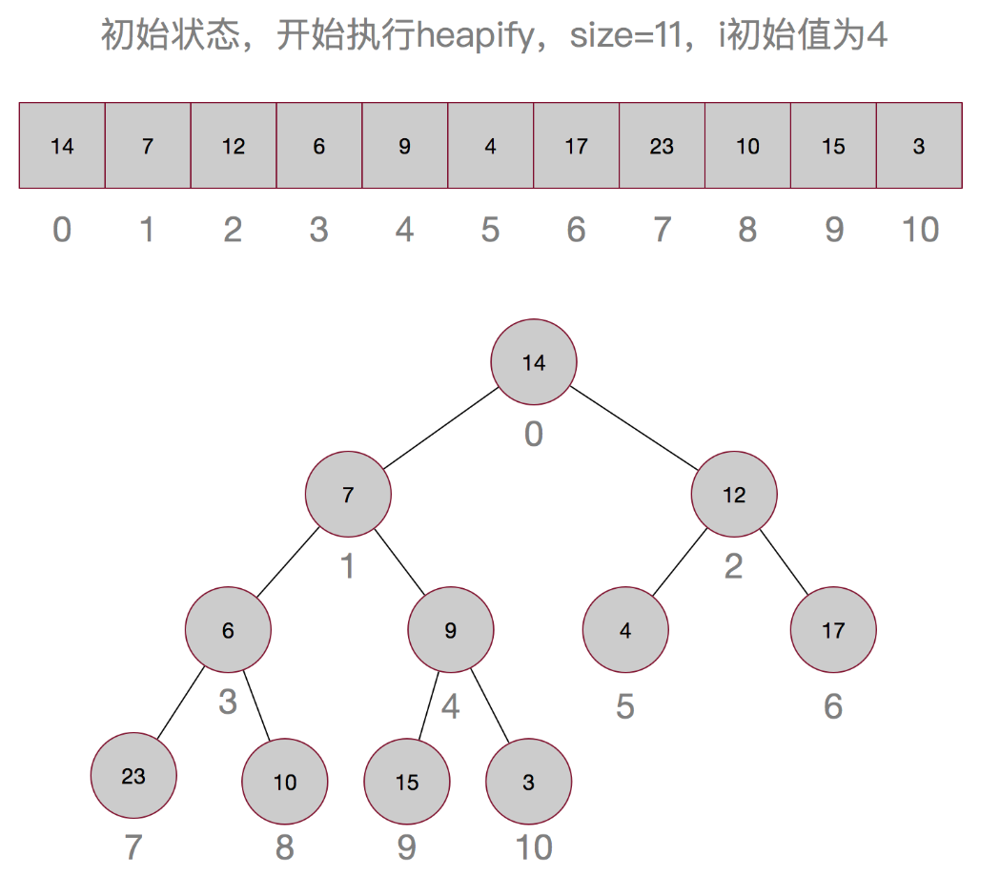
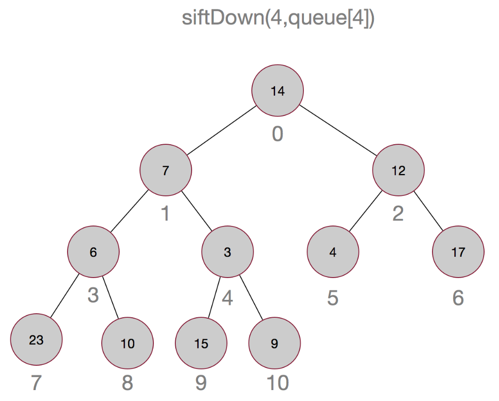
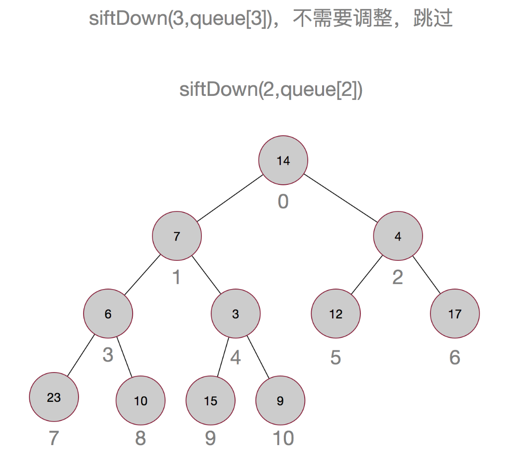
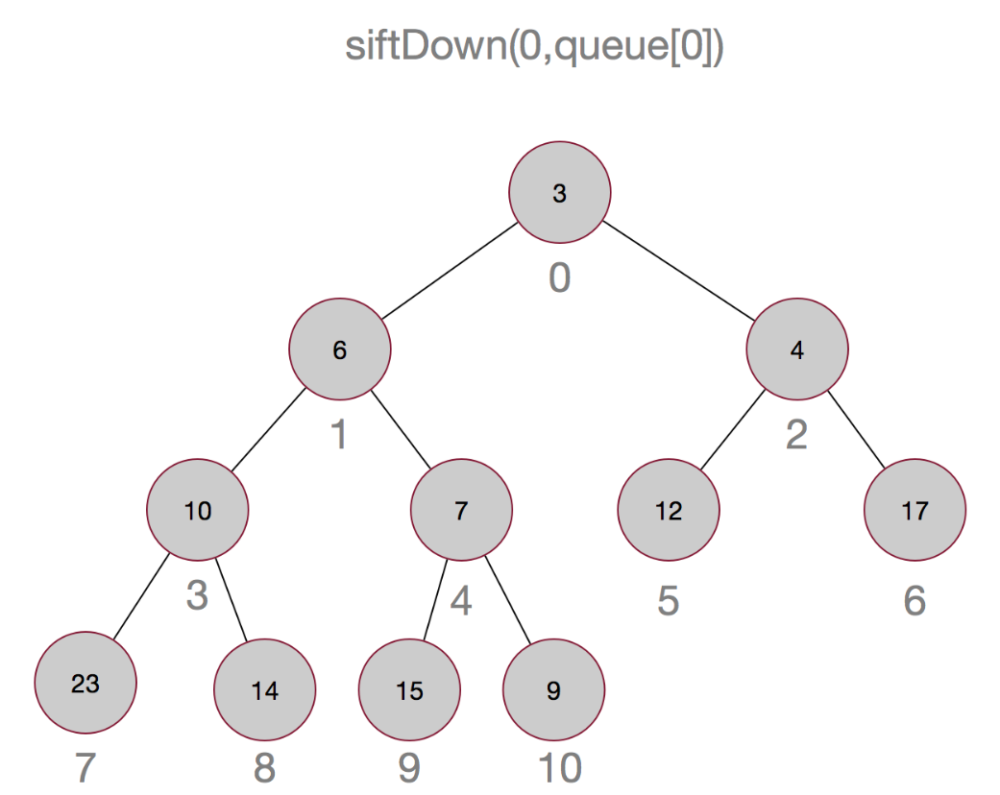
嗯，这样最小的元素就被顶上去了，有没有觉得有点像冒泡排序，嗯，确实有点像。
iftDown说完了，再来看一眼siftUp吧，这里操作是十分类似的。
private void siftUp(int k, E x) {
if (comparator != null)
siftUpUsingComparator(k, x);
else
siftUpComparable(k, x);
}
@SuppressWarnings("unchecked")
private void siftUpComparable(int k, E x) {
Comparable<? super E> key = (Comparable<? super E>) x;
while (k > 0) {
int parent = (k - 1) >>> 1;
Object e = queue[parent];
if (key.compareTo((E) e) >= 0)
break;
queue[k] = e;
k = parent;
}
queue[k] = key;
}
@SuppressWarnings("unchecked")
private void siftUpUsingComparator(int k, E x) {
while (k > 0) {
int parent = (k - 1) >>> 1;
Object e = queue[parent];
if (comparator.compare(x, (E) e) >= 0)
break;
queue[k] = e;
k = parent;
}
queue[k] = x;
}嗯，相信如果理解了siftDown的话，这里应该就不难理解了吧.
再来看看几个常用的方法：
public boolean add(E e) {
return offer(e);
}
public boolean offer(E e) {
if (e == null)
throw new NullPointerException();
modCount++;
int i = size;
if (i >= queue.length)
grow(i + 1);
size = i + 1;
if (i == 0)
queue[0] = e;
else
siftUp(i, e);
return true;
}
// 扩容函数
private void grow(int minCapacity) {
int oldCapacity = queue.length;
// 如果当前容量比较小（小于64）的话进行双倍扩容，否则扩容50%
int newCapacity = oldCapacity + ((oldCapacity < 64) ?
(oldCapacity + 2) :
(oldCapacity >> 1));
// 如果发现扩容后溢出了，则进行调整
if (newCapacity - MAX_ARRAY_SIZE > 0)
newCapacity = hugeCapacity(minCapacity);
queue = Arrays.copyOf(queue, newCapacity);
}
private static int hugeCapacity(int minCapacity) {
if (minCapacity < 0) // overflow
throw new OutOfMemoryError();
return (minCapacity > MAX_ARRAY_SIZE) ?
Integer.MAX_VALUE :
MAX_ARRAY_SIZE;
}
public boolean contains(Object o) {
return indexOf(o) != -1;
}
private int indexOf(Object o) {
if (o != null) {
// 查找时需要进行全局遍历，比搜索二叉树的查找效率要低
for (int i = 0; i < size; i++)
if (o.equals(queue[i]))
return i;
}
return -1;
}
public E poll() {
if (size == 0)
return null;
int s = --size;
modCount++;
E result = (E) queue[0];
E x = (E) queue[s];
queue[s] = null;
if (s != 0)
siftDown(0, x);
return result;
}这里对照一下最开始说的小顶堆的插入和移除就能比较好的理解了。
最后源码中还有一个remove方法，需要稍微说明一下：
// 这里不是移除堆顶元素，而是移除指定元素
public boolean remove(Object o) {
// 先找到该元素的位置
int i = indexOf(o);
if (i == -1)
return false;
else {
removeAt(i);
return true;
}
}
// 移除指定序号的元素
private E removeAt(int i) {
// assert i >= 0 && i < size;
modCount++;
// s为最后一个元素的序号
int s = --size;
if (s == i)
queue[i] = null;
else {
// moved记录最后一个元素的值
E moved = (E) queue[s];
queue[s] = null;
// 用最后一个元素代替要移除的元素，并向下进行调整
siftDown(i, moved);
// 如果向下调整后发现moved还在该位置，则再向上进行调整
if (queue[i] == moved) {
siftUp(i, moved);
if (queue[i] != moved)
return moved;
}
}
return null;
}当移除的不是堆顶元素的时候，同样先用最后一个元素代替，然后先从被移除的位置开始向下调整，如果发现没有改动，则再向上调整。
PriorityQueue的应用场景
最后，来聊聊PriorityQueue的应用场景，由于内部是用数组实现的小顶堆，所以堆适用的场景它都适用，比如典型的从n个元素中取出最小（最大）的前k个，这样的场景适用PriorityQueue就能以比较小的空间代价和还算ok的时间代价进行实现，另外，优先级队列适用场景的特点便是需要动态插入元素，并且元素有优先级，需要根据一定的规则进行优先级排序。
下面以从10000个整数中取出最大的10个整数为例进行介绍。
public class Test {
public static void main(String[] args){
ArrayList<Integer> integers = new ArrayList<>(10000);
Random random = new Random();
for (int i = 0; i < 10000; i++) {
Integer integer = random.nextInt();
if (!integers.contains(integer))
integers.add(integer);
}
Integer[] largest = getLargest10(integers);
for (Integer i : largest){
System.out.print(i + " ");
}
System.out.println();
// 验证一下是否是最大的前10个
integers.sort(Comparator.comparingInt(Integer::intValue));
ArrayList<Integer> largest2 = new ArrayList<>(10);
for (int i = integers.size() - 1; i >= integers.size() - 10; i--){
largest2.add(integers.get(i));
}
// 在largest数组中查找
System.out.println(Arrays.asList(largest).containsAll(largest2));
}
public static Integer[] getLargest10(ArrayList<Integer> integers){
PriorityQueue<Integer> queue = new PriorityQueue<>(10);
for (Integer integer : integers){
queue.add(integer);
if (queue.size() > 10){
queue.poll();
}
}
return queue.toArray(new Integer[10]);
}
}输出如下，由于是取的随机数，所以每个人的输出都会不一样。
2143974860 2143998490 2144350843 2145111627 2144739333 2145674658 2144667271 2145543903 2147209906 2145466260
true最后，我们来回答一下开头的问题：
1、PriorityQueue是什么？PriorityQueue是优先级队列，取出元素时会根据元素的优先级进行排序。
2、PriorityQueue的内部结构是什么？PriorityQueue内部是一个用数组实现的小顶堆。
3、二叉堆、大顶堆、小顶堆分别是什么？有什么特性？二叉堆是完全二叉树或者近完全二叉树，大顶堆即所有父节点大于子节点，小顶堆即所有父节点小于子节点。
4、小顶堆是如何实现的，如何用数组表示？小顶堆是用二叉树实现的，用数组表示时，父节点n的左孩子为2n+1，右孩子的序号为2n+2。
5、小顶堆的删除、插入操作是如何进行的？小顶堆删除堆顶元素后用最后一个元素替补，然后从上往下调整，插入一个元素时，先放到最后的位置，然后再从下往上调整。
6、PriorityQueue的源码解析。如上。
7、PriorityQueue的应用场景。适用于需要动态插入元素，且元素有优先级顺序的场景。